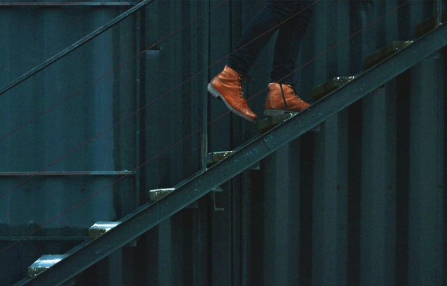

60 важных истин, которые стоит знать о жизни
Вам не изменить других людей – невежливо даже пытаться это делать.
Избавиться от набранного веса гораздо сложнее, чем просто стараться не набирать его.
Всегда помните, что человек, с которым вы только что начали спор, вероятно знает о предмете дискуссии больше, чем вы.
Ни самая дорогая, ни самая дешевая модель техники обычно не стоят уплаченных за них денег.
Все симпатизируют тем, кто не говорит лишнего.
Настроены бывает переменчивым: плохое приходит и уходит, но если попытаться силком его прогнать, то скорее всего оно задержится на дольше.
Дети невероятно честны, до тех пор, пока взрослые не научат их лгать.
Когда вы начинаете разговаривать на повышенных тонах, все обычно становится еще хуже.
Когда вы думаете, что беспокоитесь о том, что о вас подумают другие, на самом деле вы беспокоитесь лишь о том, что о вас подумаете вы сами.
Если вы столкнулись с проблемой, ответственность за ее решение всегда лежит на вас – и неважно, кто ее вызвал.
Вы никогда не столкнетесь со временем в масштабе — только с одним моментом
Если вы никогда не сомневались в своих поступках, скорее всего, вы наделали кучу ошибок.
Управление своими желаниями – важнейший из навыков, которым вы можете научиться.
Никто не может знать все. Смиритесь.
Цинизм — это слишком просто, чтобы быть полезным.
Каждый человек, которого вы встречаете, сражается в битве, о которой вы ничего не знаете. Будьте вежливы. Всегда.
Если вы хотите узнать больше о жизни, почитайте работы Ральфа Уолдо Эмерсона. Они – подлинная сокровищница знаний о счастье и доброте.
Люди склонны к преувеличениям. Все и всегда.
Гнев лишь доказывает, что вы слабы духом. То же можно сказать и о насилии.
Люди не могут уничтожить нашу планету, зато могут лишить ее способности поддерживать жизнь. Чем, собственно, и занимаются.
Когда людям не нравится положение, в котором они оказались, они уходят в свои мысли и, иногда, застревают там
Те, кто больше всего жалуются, в итоге меньше всего добиваются.
Чем дольше вы откладываете что-то «на потом», тем труднее вам потом будет с этим справиться.
Большая часть того, что мы видим – на самом деле лишь то, что мы думаем о том, что видим.
Самая распространенная зависимость – зависимость от привычного комфорта.
Любимое развлечение тех, кто чурается ответственности – обвинять в неудачах тех, кто берет эту ответственность на себя.
Любой человек, кого вы встретите на вашем жизненном пути, в чем-то да лучше вас.
Доказательство – всего лишь набор мнений, совпадающих с вашим собственным.
Попытка исполнить собственные желания – вовсе не эгоизм. По крайней мере, не всегда.
Если вы разложите свою жизнь по полочкам – жить вам стоит куда проще.
В каждом клише скрыта истина. Да, ее повторяли столько раз, что заслышав ее, вы поднимаете взгляд к потолку в молчаливом протесте – но истина от этого никуда не девается. Она все еще там.
Качество всегда лучше количества – будь то материальные блага, друзья или ценный опыт.
Если бы все читали NationalGeographic, мир был бы куда лучшим местом.
Ничто не бывает бесплатным. Даже если за что-то не приходится платить, на него все равно приходится тратить время
Зависимость от чего-то – куда более серьезная проблема общества, чем нам кажется. В той или иной форме она присутствует во всех нас, хотя обычно мы называем ее иначе.
Изменив походку и одежду, вы изменяете и то, как вы себя чувствуете. Да и то, как о вас думаю окружающие, тоже – хотите вы того или нет.
Каждый, кто умеет водить, считает свое умение немного выше среднего
Если уж валяться на чем-то, то только на качественном ортопедическом матрасе. Как-никак, вы проведете на нем треть своей жизни.
Все мы лицемеры – хоть и пытаемся ими не быть.
Если вы скажете что-то ребенку, ограничившись 2-3 короткими предложениями, он вас поймет куда лучше, чем вам кажется.
Если вас тянет что-то купить на распродаже, сперва подумайте, а нет ли подвоха?
Слова обладают огромной силой. Одно не вовремя сказанное слово может ранить на всю жизнь.
Хотите сделать чей-то день приятнее? Просто будьте с этим человеком обходительны.
Большей части того, чему дети учатся от своих родителей, те и не думали их учить.
Если какое-то блюдо не понравилось вам с первого раза, дайте ему второй шанс.
С какой бы проблемой вам не довелось столкнуться, она редко оказывается столь же болезненной, как связанный с нею страх
Ничто и никогда не происходит в точности так, как ожидалось.
Большая часть людей просто не умеет принимать комплименты и предложения помощи.
Вам не скрыть свое плохое настроение от людей, которые хорошо вас знают – однако это не повод быть невежливым.
Порою вам приходится исключать некоторых людей из вашей жизни – даже если они – часть вашей семьи.
Лучший способ обрести спокойствие – взглянуть на звезды.
Нет никакого смысла дочитывать книгу, которая вам не нравится. Жизнь слишком коротка для этого. Проглотите свою гордость и отставьте ее назад на полку.
Зачастую между ценой батареек и тем, сколько они прослужат, нет никакой связи.
Чтобы освоить что-то новое, обычно требуется лишь чуть больше усилий, чем на что-то привычное.
Жизнь – это странствие в одиночку, но к вам часто прибиваются попутчики. Некоторые – на долгий срок, большинство – на короткий.
Одна из лучших вещей, которые вы можете сделать для своих детей – вывезти их на природу или поехать с ними на отдых.
Чем меньше у вас имущества, тем оно для вас полезнее.
Эйнштейн был куда мудрее, чем умнее, потому-то он и был гением.
Когда вам кажется, что ваша жизнь вас достала – прочтите хорошую книгу.
Способность быть счастливым – это способность понимать и принимать перемены.